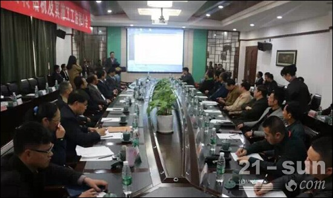
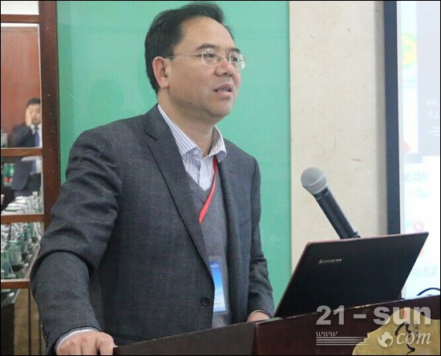
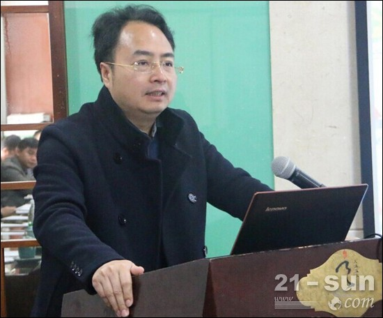

盾安重工全套管全回转钻机绽放宜春百荣百尚
中国工程机械商贸网2015年4月11日，徐州盾安重工机械制造有限公司和深圳市宏业基基础工程有限公司紧紧围绕全套管施工工法与设备应用，在江西宜春联合组织召开全套管全回转钻机及施工工法推介会。
推介会现场
徐州盾安重工机械制造有限公司董事长周才良、总经理陈建海，深圳市宏业基基础工程有限公司董事长陈枝东，中国建筑业协会深基础施工分会首席顾问王新杰、中国工程机械学会桩工机械分会秘书长郭传新、中国建筑科学研究院地基所副总工程师刘金波、上海远方基础工程有限公司技术总监黄文龙、广西俊蒙实业基础工程公司总经理莫吕斌、《基础工程》杂志社社长孙金山等行业专家领导共计50余人出席了本次会议。
中国桩工学会秘书长郭传新致辞，并发表讲话
中国建筑科学研究院地基所副总工程师刘金波致辞，并发表讲话
中国建筑业协会深基础施工分会首席顾问王新杰发表权威报告
深圳市宏业基董事长陈枝东致辞，并发表讲话
徐州盾安重工总经理陈建海致辞，并发表讲话
全回转工法现在已经成为新型、环保、高效的钻进技术，在城市地铁、深基坑围护咬合桩、废桩（地下障碍物）的清理，高铁、道桥、城建桩的施工，水库水坝的加固等项目中得到了广泛的应用。这种全新的工艺工法的成功研究，实现了DTR系列钻机咬合桩施工工法；全回转钻机嵌岩施工/旋挖钻机与全回转钻机联合工法；无损拔桩及地下障碍物清除工法；特殊环境下、无扰动环保型全套管灌注桩施工；盖挖逆作法施工—钢管柱垂直插入施工的可能。